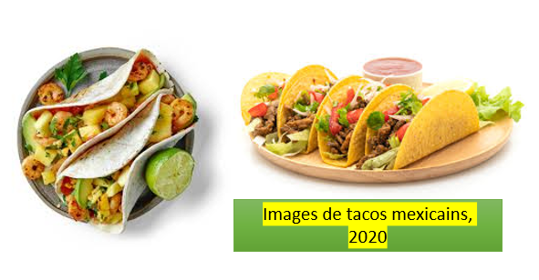
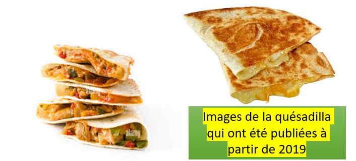
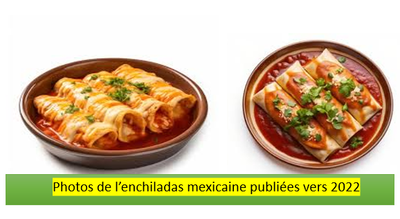

La gastronomie mexicaine est un mélange vibrant de saveurs, d'ingrédients et de traditions, profondément enracinée dans l'histoire et la culture du pays qui aujourd'hui fait vedète auprés des jeunes majoritairement. Elle se caractérise notamment par l'utilisation d'ingrédients locaux. C'est plats emblématiques sont des incontournables qui varient selon les régions. La cuisine mexicaine est un véritable reflet de la diversité culturelle du pays, alliant influences indigènes et espagnoles, et elle a été inscrite au patrimoine culturel immatériel de l'humanité par l'UNESCO en 2010.
On retrouve par exemple:
1/-Les tacos:

Un taco est un antojito (plat léger, collation) de la cuisine mexicaine qui se compose d'une tortilla de maïs garnie (avec en général plusieurs ingrédients typiques de la gastronomie mexicaine, dont une sauce) pliée en deux. Les tacos se mangent généralement sans couverts, avec les doigts. L'origine du taco remonte probablement au Mexique précolombien. Actuellement, au Mexique, les tacos sont le plat le plus consommé devant la pizza, et ses ventes représentent un moteur important de l'économie nationale, générant plusieurs dizaines de milliers d'emplois directs. Le taco est un des emblèmes internationaux du Mexique, avec les mariachis.
2/-La quesadilla:

La quesadilla est une recette mexicaine populaire qui combine à la perfection des ingrédients et des techniques de préparation du vieux monde et du nouveau monde.La quesadilla est un plat, très gourmant, typiquement Mexicain qui se prépare avec une tortillas de blé (Harina) ou de maïs replié deux au milieu avec du fromage fondu. Il existe énormément de variantes, à chacun d'en faire sa version à son goût. On peut y ajouter du bœuf, du poulet, du jambon, du maïs, des légumes etc….
3/-L'enchiladas:

Les enchiladas ont eu un impact mondial en popularisant la cuisine mexicaine à l'échelle internationale. Grâce à leur saveur riche et épicée, elles sont devenues un plat apprécié dans de nombreux pays, notamment aux États-Unis, où elles sont souvent servies dans les restaurants mexicains et tex-mex. Les enchiladas sont un plat traditionnel mexicain, composé de tortillas de maïs farcies, roulées et recouvertes de sauce chili épicée. Servies avec divers garnitures comme du fromage, de la viande ou des légumes, elles sont un classique savoureux de la cuisine mexicaine, alliant chaleur et richesse de saveurs.
Retour à l'accueil